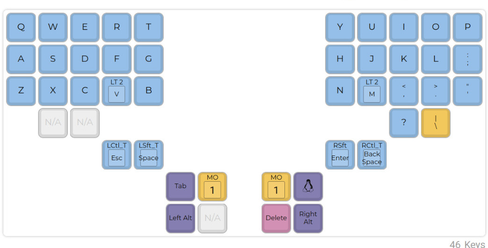
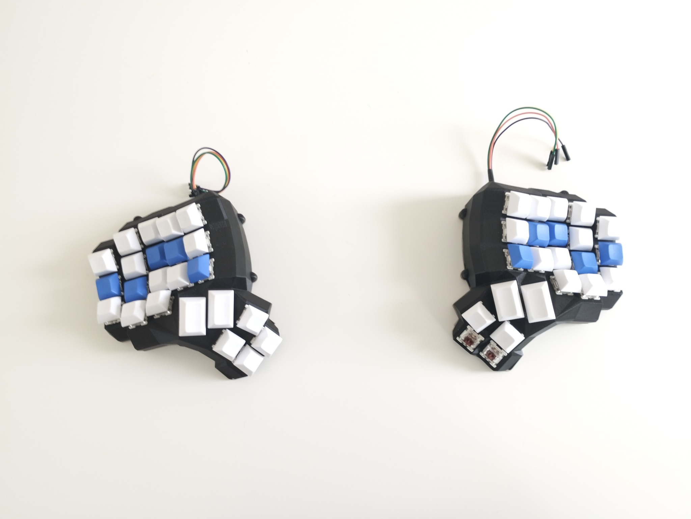
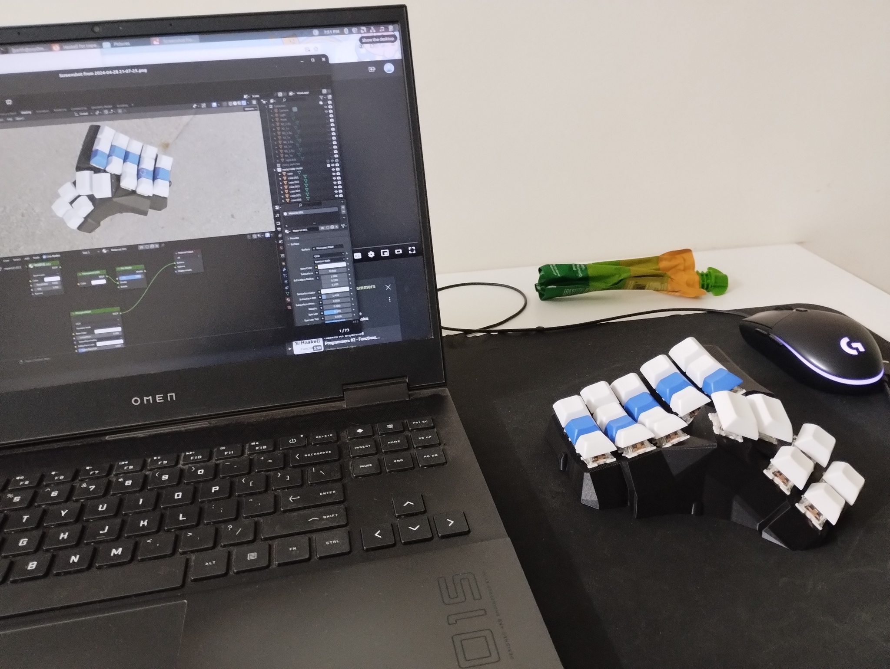
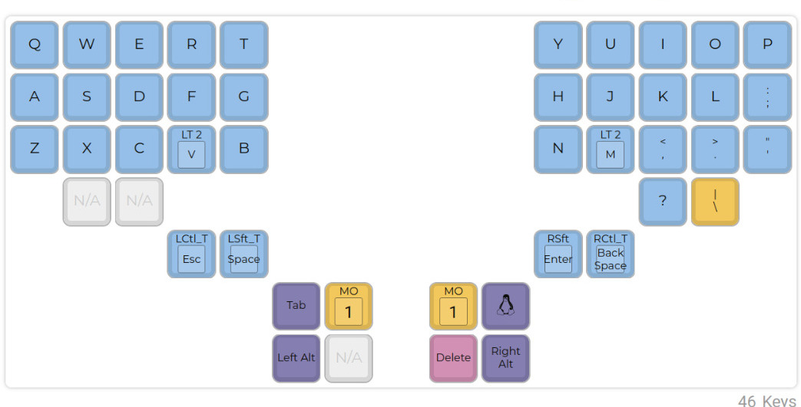

Layer 0:

Layer 1:
 Layer 2:
Layer 2:
 I forgot the function keys :skull:
I forgot the function keys :skull:
i'm concerned that if programmers can 3d print their own keyboards then all productivity will halt for a period of at least five years
— Paul Ford (@ftrain) March 15, 2015
The Dactyl Manuform is an open source keyboard on github.
It is split into two halves, and it has multiple thumb keys. I finished making mine just last week.

And it went just as planned...

Here's how you can make one:
Layer 0:

Layer 1:
Layer 2:
I forgot the function keys :skull:
Making this keyboard made me realize how awesome but dificult it is to build anything hardware. Thanks to all awesome people in the keyboard community: The people who designed the keyboards, and the people that forked it, and the people that made build guides for it, so that noobs like me can even attempt this. See :